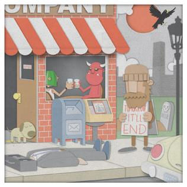
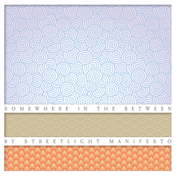

Discography
The Hands that Thieve
- "The Three of Us" 5:18
- "Ungrateful" 4:31
- "The Littlest Things" 4:50
- "The Hands That Thieve" 5:40
- "With Any Sort of Certainty" 6:10
- "If Only for Memories" 5:28
- "They Broke Him Down" 5:20
- "Toe to Toe" 4:22
- "Oh Me, Oh My" 3:45
- "Your Day Will Come" 4:44
99 Songs of Revolution: Vol. 1

- "Birds Flying Away" 3:27
- "Hell" 2:56
- "Just" 3:00
- "Skyscraper" 2:40
- "Punk Rock Girl" 2:17
- "Linoleum" NOFX 2:44
- "Me and Julio Down by the Schoolyard" Paul Simon 2:27
- "They Provide the Paint..." 3:33
- "Red Rubber Ball" 2:49
- "The Troubadour" 3:33
- "Such Great Heights" 3:30
Somewhere in the Inbetween

- "We Will Fall Together" 4:49
- "Down, Down, Down to Mephisto's Cafe" 5:03
- "Would You Be Impressed?" 3:22
- "One Foot on the Gas, One Foot in the Grave" 5:28
- "Watch It Crash" 4:43
- "Somewhere in the Between" 3:43
- "Forty Days" 3:53
- "The Blonde Lead the Blind" 4:49
- "The Receiving End of It All" 5:18
- "What a Wicked Gang Are We" 3:23